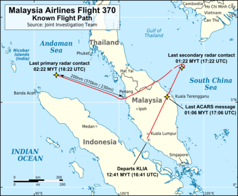
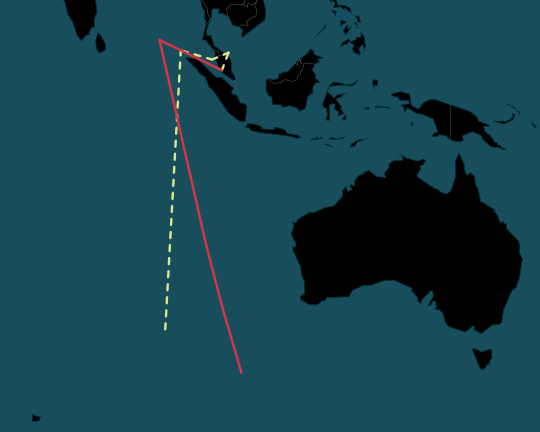
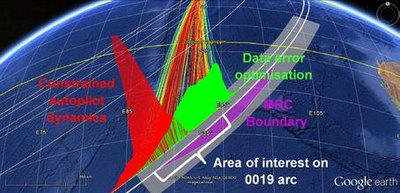
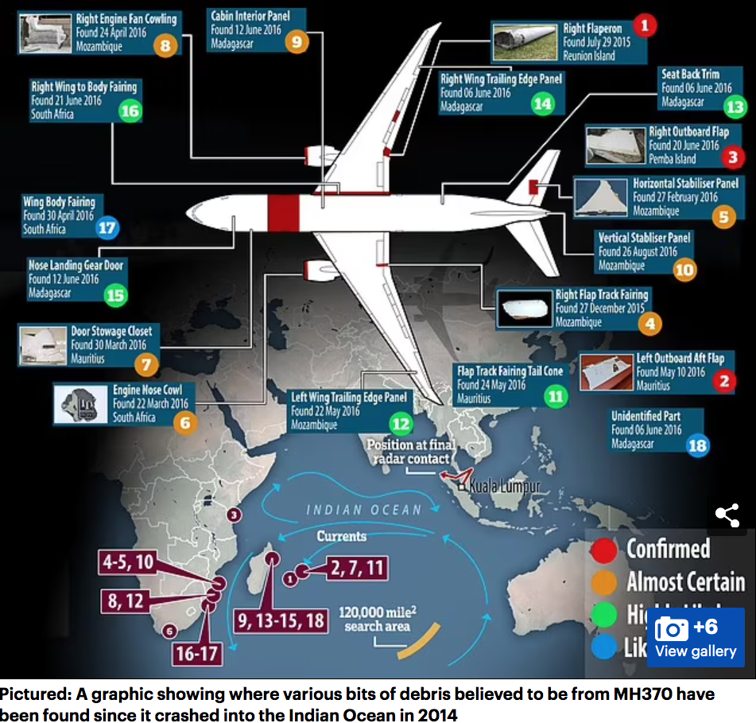

Barisan National Era
Hussein Onn
- In 1976, after Abdul Razak died, Tun Hussein Onn became prime minister
- Hussein Onn presided over a generally peaceful and multiracial coaltion
- Onn strongly opposed the immigration of Vietnamese refugees to Malaysia
- Onn also strengthened Malaysia's role in ASEAN and helped bring Brunei into the assocciation
- In 1981, Onn was forced to resign do to heart problems and named Mahathir Bin Mohamad as his successor
Mahathir Mohamad
- Operation Lalang marked the beginning of a period of Mahathir's authoritarian rule
- Mahathir served as PM for 22 years and was authoritarian in style but saw economic success
- Under Mahathir, the UMNO saw a split into Team A and Team B and eventually into UMNO Baru and Semangat 46
- Under Mahathir, Malasyia was transitioned into an industrialized nation
- Mahathir welcomed foreign investment, reduced tariffs, and privatized state-owned enterprises
- Under Mahathir, the Malaysian economy prospered with a growing manufacturing sector, expanding middle class, rising literacy rates, and increased life expectancy
- Mahathir was a rival of Tunku Abdul Rahman in the UMNO and advocated for ethnic Malay nationalism and the NEP
- Mahathir was also distrustful of the west and didn't support things like the US intervention in Iraq in 2003
Federal Territories of Malaysia
- In 1948, Kuala Lumpur became the national capital of the Federation of Malaya
- After the May 13 riots, Kuala Lumpur was subject to clashes between the federal government (Alliance majority) and the Selangor state government (opposition majority)
- In February 1974, Kuala Lumpur was split off from Selangor and made a federal territory to solve the issue
- The change made it so that Kuala Lumpur residents could no longer vote in Selangor state elections and only federal parliamentary elections
- In April 1984, Labuan became the second federal territory as it was chosen to be an offshore financial center by the federal government
- In February 2001, Putrajaya became the third federal territory as the federal government made it a planned city to replace Kuala Lumpur as the seat of the federal government
Kelantan Emergency
- In 1977, the Chief Minister of Kelantan was Mohamed Nasir of the PAS
- Later in 1977, Nasir experienced disatisfaction from within the PAS and they voted to have Nasir resign
- However, Nasir refused to resign and his supporters organized in protest in the streets of Kota Bharu resulting in mass violence and looting
- November 8, 1977, the Yang di-Pertuan Agong, Sultan Yahya Petra, also the Sultan of Kelantan declared a state of emergency in Kelantan on request from the federal government
- The next day the Emergency Powers (Kelantan) Act 1977 was passed to give Parliament power to govern the state
- 12/14 BN PAS members voted against the bill and the PAS was expelled from the BN as a result
- In March 1978, there were new elections in Kelantan with UMNO winning 23 seats, BERJASA 11 (Nasir's new party), and PAS 2 seats
- Following, BERJASA joined the BN and the UMNO formed a government in Kelantan for the first time
Pedra Branca Dispute
- Islands include: Pedra Branca, Middle Rocks, and South Ledge
- In 1850-51, Pedra Branca began being administered by Singapore after the UK built the Horsburgh Lighthouse on it
- The island was previously administered by the Sultan and Temenggung of Johor until it became part of the Straits Settlements in 1826
- In 1979, Malaysia published a map proclaiming the islands were theirs
- In 1980, Singapore diplomatically protested the map, claiming Pedra Blanca
- In 1993, Singpore claimed the islands of Middle Rocks and South Ledge
- In 1989, Singapore proposed a dispute in the ICJ and Malaysia agreed in 1994
- The ICJ case began in 2007 and Singapore argued that Pedra Branca (Singapore said all the islands were one entity) was terra nullius ("land belonging to no one") and that there is not evidence the islands ever belonged to the Johor Sultanate but rather the UK for the construction of the lighthouse in 1847
- Malaysia's case was that that Johor had the original title to Pedra Branca, Middle Rocks and South Ledge, that the islands were not a single entity, and that the British just built the lighthouse but sovereignty over the islands stayed with Johor.
- A controversy with the case was that Malaysia's main evidence was a letter they said the Johor Temanggung recieved from Britain asking for permission to build the lighhouse but left sovereignty over the island with Johor, however Malaysia claimed the letter was in Singapore's archives, which Singapore denied.
- Largely resolved by the ICJ in 2008 after they ruled Pedra Branca was Singapore's (12-4), Middle Rock was Malaysia's (15-1), and South Ledge was both since it was in overlapping waters (15-1).
- The ICJ ruling largely pleased both sides and the Joint Technical Committee was established in 2008 to delimit boundary areas adn determine ownership of South Ledge..

Islamic Movement
- Islam was introduced in the Malay Peninsula in 1100's CE and was the majority faith by the 1400-1500s with the rise of the Sultan
- Following WW2, the first Islamic political movements began to form with the Malay Nationalist Party (MNP) but was dissolved during the Malay Emergency
- In 1951, this movement would reform into the Pan Malayan Islamic Party (PAS) as a splinter group of the UMNO
- When Malaysia was formed, Sunni Islam was named the country's religion due to recommendations to do so from the Reid Commission, other religions remained legal constitutionally but freedom of religion is still limited (including a complete ban on Shia Islam)
- The constitution stated that you must be Muslim to be an ethnic Malay
- In 1972, the PAS president Asri Muda announced that the party would be joining the Alliance Party (UMNO-PAS partnership)
- PAS was most popular in the rural states such of Kelantan, Terengganu, Perlis, and Kedah
- In the 1974 general election, PAS got their most parliament seats (14) but Asri left BN (Alliance Party) in 1977, severely damaging PAS popularity (only 5 seats in 1978 election)
- In the late 1970s, the dakwah or Islamic fundumentalist revival grew among the younger generation who disliked the westernization of Malay society
- In 1977, during the Kelantan Emergency, the Islamic BERJASA political party was formed as a splinter group of the PAS
- In the 1978 election, BERJASA joined BN and won 11 state seats in Kelantan (UMNO got 23, PAS got 2) but their popularity quickly dissolved in subsequent elections
- Before the Islamic revival, many Malay Muslims only followed moderate Islam but after the revival, Malaysia transformed into a more Islamic enviornment
- Today, almost all ethnic Malays are Muslim and about 70% of Malay Muslim women wear headscarves (which popularized during the 1980s)
Spratly Island dispute
- The Spratly islands are a small group of islands in the South China sea with maritime features (cays, reefs, banks), oil reserves, and commercial fishing grounds.
- China, the Philippines, Taiwan, and Vietnam claim the whole spratly islands, while Brunei and Malaysia claim part of the islands.
- Malaysia's claims to some of the islands are only ones that are in its exclusive economic zone (exclusive rights over a territory) of 200 miles as defined by the UN Convention on Law of the Sea (UNCLOS) that was signed in 1982
- This claim requires that the islands are res nullius (land belongs to nobody), which was satisfied when Japan renounced the islands after the end of WW2 with the signing of the San Francisco Treaty
- Malaysia militarily occupies the 5 islands it considers as part of Malaysia
- In 1971, Malaysian issued their first claims over some of the Spratly Islands
- In 1979, Malaysia published a map of their continental shelf (the Pedra Branca one) that included 12 of the Spratly islands
- Swallow Reef became Malaysian military occupied in 1983 and has been turned into an island through land reclamation.
- Malaysia also military occupies Ardasier Reef and Mariveles Reef
- In 1992, Malaysia and Vietnam jointly agreed to develop areas around these disputed islands
- In 1994, Malaysia agreed to sign the UNCLOS
- In 2009, the UNCLOS allowed for extended limits beyond 200 miles and Vietman and Malaysia made a new joint claim over a "defined area" in the middle of the South China Sea between the two countries and that included part of the Spratly Islands
- In 2010, it was reported that Mahathir Mohamad believed he could profit from economic growth with China and that they were not a threat to the region
- Malaysia has since shifted to actively condemning China as they encroach into its territorial waters.
- In 2011, China, Brunei, Malaysia, the Phillipines, Taiwan, and Vietnam agreed to a set of guidelines called the Declaration of Conduct of Parties in the South China Sea (DOC) to help resolve maritime disputes.
- Indonesia is not part of the SCS dispute but between 2014-2019 had destroyed 87 Malaysian ships (out of 556 total) for violating their rules

Malaysia: 50: Swallow Reef 51: Ardasier Reef 52: Dallas Reef 53: Erica Reef 54: Investigator Shoal 55: Mariveles Reef
Federal Territory of Labuan (1984)
- In 1848, Labuan became a crown colony under James Brooke with the intention of making it into the next Singapore
- In 1907, Labuan became one of the Strats Settlements
- During WWII, from 1942-45, Labuan was occupied by the Japanese
- In 1946, Labuan again came under British military control and joined the North Borneo Crown Colony
- In 1963, Labuan joined Sabah during the formation of Malaysia
- Finally, in 1984, Sabah ceded Labuan to the Malaysian federal government and it soon became a federal territory
- This means that Labuan is governed by the Malaysian federal government under the Department of Federal Territories under the Prime Minister's Department
- Labuan is governed municipally by the Labuan Corporation, they also have on representative for both houses in the Malaysian Parliament
- In 1990, Labuan was declared as an international offshore financial center and free trade zone
- Labuan is now a base for 4,800 offshore companies and 68 licensed banks.
Memali Incident (November 1985)
- Code name: Operasi Angkara (Operation Cause) and Operasi Hapus (Operation Destroy)
- Location: remote village of Kampung Memali, Baling in Kedah
- In 1981, the president of the PAS, Hadi Awang, claimed that the UMNO was unIslamic because they were colonialist and said any struggle against the UNMO is therefore jihad and that anyone who died in a struggle was al-Shahid (martyrs)
- This occured at I time when there was severely strained UMNO-PAS relations, some PAS members even suspected some UMNO members of being secular
- Ibrahim Mahmud was an Islamic scholar who studied in Libya (nickname was Ibrahim Libya) and was very popular amont the village folk, who vowed to defend him to their death
- Ibrahim was wanted by the police under the Internal Security Act for creating discord and disharmony and harbouring the two Che Mit brothers who were figitives
- On November 19, 1985, a team of 200 policemen laid siege to the Kampung in Memali, where Ibrahim was leading an Islamic sect of 400 people
- The siege resulted in 14 dead villagers (including Ibrahim) and 4 dead policemen; 159 arrests were made.
- The Malaysian government later released footage of the incident of wounded police on national TV and a white paper
- The PAS referred to the deaths as martyrs and set up a fund for the victim's family's but the Kedah government said not all that had died where martyrs in a fatwa
Operation Lalang (October 1987)
- Code name: Operation Laling (Operation Weeding)
- In 1986 and 1987, a split occured within the UNMO, a Team A led by Mahathir and a Team B led by Tengku Razaleigh Hamzah/Musa Hitam
- In 1986, Deputy PM Musa Hitam resigned, citing irreconcilable differences with Mahathir
- Mahthir's leadership was challenged as Tengku Razaleigh Hamzah tried to take his spot as UMNO president and thus as PM, but Mahathir narrowly won
- Mahathir oversaw attacks by the government on several NGOs critical of the government and a rise in race/religious/ethnic related tensions/issues
- There were a myriad of these issues but the main one was the Ministry of Education's decision to appoint over 100 senior assistants/supervisors to Chinese-medium primary schools, raising Chinese concern that the students might be forced to use English or Malay in school
- On 11 October 1987, over 2000 people demonstrated, led by the United Chinese School Committees Association of Malaysia, joined by leaders from the MCA, DAP, and GERAKAN, to protest the government's decision at 57 of the schools.
- On 17 October 1987, the UMNO Youth responded with their own 10,000 strong rally and UMNO politicians condemned MCA leaders
- On 18 October 1987, in an unrelated incident, a Malay soldier (Prebet Adam) rampaged and killed a Malay near Kuala Lumpur between two large Chinese/Malay communities
- While PM Mahathir was away abroad, UMNO politicians planned a large UMNO rally in Kuala Lumpur on November 1 but was later cancelled when Mahathir returned and launched Operation Lalang
- On 27 October 1987, Mahathir and the police launched the operation and said it was needed to defuse the racial tension
- The operation began with a mass arrest of ~100 people under the ISA including: DAP/MCA/PAS/UMNO/Gerakan opposition political leaders, social activists and other for incitement of racial sentiment and showing Marxist tendencies.
- The publication liscenses of The Star, Sin Chew Jit Poh, the Sunday Star, and Watan newspapers were also revoked, after being critical of Mahathir
- Mahathir also restricted free assembly and announced a nationwide ban on any gathering or large rally and in December 1987 introduced legislation to further restrict publishing and give more power to the police to prevent rallies
- Tunku Abdul Rahman quote about the operation and Mahathir's authoratarianism: "We are on the road to dictatorship. I cannot see any other way... This is no democracy."
Constitutional Crisis (1988)
- In 1987, the UMNO held elections for its numerous offices with PM Mahathir (Team A) being challenged by Tengku Razaleigh Hamzah (Team B)
- However, Mahathir was the winner with 51% of the vote, Razaleigh's (48.5% of the vote) supporters called the election rigged and were further angered when Mahathir purged all Team B members from the Cabinet
- This was followed by 12 UMNO members filing a lawsuit with the High Court seeking a reelection.
- The UNMO formed a "Unity Panel" to try and reach a compromise but failed and Team B continued to seek a final judgement from the High Court
- This angered Mahathir, who had previously had spates with the court, and began making public heated attacks on the judged within the High Court
- Judge Harun, finally made a judgement and declared the UMNO "an unlawful society", thereby rendering "[w]hat happened in 1987" a nullity.
- Within the next two weeks, Mahathir announced the registration of the UMNO Baru (new UMNO), whose leadership was almost entirely composed of Team A.
- The Team B "UMNO 11" went on to appeal their case with the Supreme Court, looking to achieve new elections, but the case was rejected.
- Razaleigh would go on to split off and form the Semangat 46 (Spirit of 46) party and the UMNO Baru then dropped the "Baru" from their name, with both parties claiming to be the true successor to the UMNO.
- The UMNO 11 case was just one of many that angered Mahathir and following Operatin Lalang, he sumbitted several consitutional amendments to parliament
- These included divesting hte courts of hte "judicial power of the Federation" and giving them only such judicial powers as Parliament might grant them
- The Supreme Court and High Court judges responded by writing a secret letter to the Yang di-Pertuan Agong and the Malay rulers expressing their greviances and asked for help in stopping Mahathir's accusations of corruption
- In 1988, the Lord President of the Supreme Court, Tun Sallah Abas, and 5 other supreme court justices were suspended, effectively suspending the supreme court.
- Critics of Mahathir's actions, such as Tunku Abdul Rahman, called them "disgusting" while Mahathir supporters said he was liberating Malaysian judiciary from a colonial mindset and justified this with claims that the judges were abusing public funds for personel expenses such as luxury Italian furniture.
Royal Immunity Ammendments (1993)
- Before 1993, the royalty could violate the law without persecution, unless they voluntarily wished to surrender their legal immunity
- In the 1990 general election, the Sultan of Kelantan, allegedly campaigned for Semangat 46 and PAS, resulting in the BN losing control of Kelantan to them.
- This outraged Mahathir, who said that the royal support for Semangat 46 violated the constitutionally required neutrality of royalty.
- In March 1992, the BN-led government and royalty relations further deteriorated when the government said the Kelantan Sultan owed $2.1 million ringgit after failing to pay taxes for the purchase of 20 Lamborghinis, the Sultan responded by calling for the implementation of Islamic laws in the PAS led state
- In July 1992, the son of Sultan Iskandar, the Sultan of Johor, assaulted a Perak hockey goalkeeper after Perak beat Johor in a championship.
- This upset Douglas Gomez, a hockey coach, who made public critisisms, which in turn made the Sultan angry
- In November 1992, the Sultan summoned Gomez to the Sultan palace, where Gomez was beaten by the Sultan, infront of his bodyguards.
- The Gomez incident was widely covered in Malaysian-state media and led to further widespread public outrage.
- In December 1992, parliment began proposing amendments to remove royal legal immunity but were not able to pass anything because the royalty needed to endorse the amendments, which they didn't
- The Dewan Rakyat and Dewan Negara were finally able to reach a compromise with the Agong that allowed the rulers to delay any legislation within 60 days (previous proposal was only 15 days)
- In March 1993, the amendments passed with the aim of removing legal immunity of the royalty
- Amendments to Articles 32, 38, 42, 63, 72 and 181 in the Constitution of Malaysia
- In May 1994, a further amendment was passed that allowed laws passed by both the Dewan Rakyat and the Dewan Negara to become law within 30 days, even without approval of the Agong.
Financial Crisis (1997-98)
- In the early 1980s, Anwar Ibrahim gained rapid popularity in the BN
- Ibrahim was widely believed to be the successor to Mahathir
- In 1993, Anwar was elected as deputy president of the UMNO
- In 1997, the Asian financial criris occured, sparking from the financial collapse of the Thai baht
- The fallout quickly spread to Malaysia, the ringgit was heavily traded by speculators causing rating downgrades and a selloff of Malaysian stocks/currency.
- Malaysian credit dropped from investment grade to junk, the KLSE dropped from 1200 to 600, and hte ringgit dropped from 2.50/dollars to 4.57/dollars.
- Mahathir imposed strict capital controls (stopping overseas trade in riggit, restricing overseas investment abroad, restricting foreign portfolio funds) and announced a 3.80 peg to the US dollar
- Anwar was the finance minister in 1997 and differed in economic prescription opinion against Mahathir on how to rescue the economy
- By 1998, Malaysia had plunged into a recession with GDP dropping 6.2%, riggit dropping to 4.7/dollar, and KLSE dropping below 270 points.
- In September 1998, further capital controls were imposed and IMF aid was refused
- Also in September 1998, Mahathir removed Anwar from office, leading to Reformasi movement
- By 2005, Malaysia had returned to a $14 billion dollar surplus, however foreign investment and investor confidence has not returned to what it was pre-1997.
Reformasi Movement (1998-2022)
- During the 1997-98 financial crisis, Anwar (apparent heir to Mahathir) and Mahathir differed in opinion on how to save the economy, especially relating to IMF loans
- Mahathir wanted to stabilize the currency to cushion further speculation in the economy while Anwar advocated for IMF-style, free-market oriented corrective measures.
- The economy eventually began to recover under Mahathir's measures but Anwar continued to express opposition.
- This resulted in September 1998, in Mahathir removing Anwar from office and expelling him from the UMNO
- Following, Anwar began to lead public lectures against Mahathir, mostly among the youth who agreed with him on social justice and social safety nets for the economy.
- Opposition parties DAP and PAS also supported Anwar
- Still in September, 18 days after being removed from office, Mahathir finally arrested Anwar (and many of his supporters) and charged him with corruption and sexual misconduct (which he was eventually convicted of in 1999 when he was sentenced to 6 years in prison for corruption and later 9 years for sodomy)
- The conviction of Anwar has been widely discredited by the international community including the US, Amnesty International, and Indonesia and Anwar was seen photographed with a black eye while in custody
- In 2004, the Federal Courth overturned Anwar's sodomy convition and he was immediately released
- This (and to a lesser extent the factionalism within the UMNO/Semangat 46) led to protests, initiated by Anwar's arrest, under the banner of Reformasi, that were in support of Anwar and claimed the charges were only to huminiate him and to clear all potential rivals of Mahathir.
- The protester's demands where for Mahathir to step-down and the BN led government to end
- The protests broke out when Malaysia was hosting the Commonwealth Games and were untraditionally not racial based
- The demonstrations mostly tapered out by November 1998 but still continue for key dates such as Anwar's arrest day
- Reformansi demonstratons have sprung up as recently as 2018
- The movement also resulted in the PAS and other smaller Islamic parties joining to form the GERAK coalition and the DAP and other smaller parties to form GAGASAN coalition in opposition to the BN
- In 1999, Reformansi also led to a new liberal democracy supporting multiracial-based party names Parti Keadilan Nasional (KEADILAN or PKR), that was formed by Anwar's wife, Wan Azizah Wan Ismail
- The PAS, DAP and PKR forming the Barisan Alternatif coalition to take on the BN in the 1999 elections
- In the 1999 elections, the BN won 148/193 seats but the BA alliance stole 22 seats from the UMNO after running on reform policies
- However, in the 2004 election the BN came back strong and took back to 198/219 seats, mainly due to malappointment and gerrymandering
- After the BA's defeat in 2004, the coalition was disbanded (BA also had fragmentation due to PAS insisting on an Islamic state and the DAP leaving in 2001 after 9/11)
- In September 2004, Anwar was released and in the 2008 elections he led the PKR to win 31 seats and cause the BN to lose their 2/3rds majority (DAP/PAS/PKR together won 81 seats as PR coalition to UMNO's 140 seats).
Abdullah Ahmad Badawi PM (2003-2009)
- Abdullah Amnad Badawi was a member of UMNO Team B (Mahathir was Team A) but didn't joing Semangat 46 after being sacked from the UMNO for supporting Team B
- In 1988, Mahathir brought Abdullah into the committee of the UMNO and was made vice president
- In 1991, Mahathir made Abdullah the foreign minister during a cabinet resuffling
- In January 1999, PM Mahathir appointed Abdullah as deputy prime minister
- In October 2003, Mahathir retired as PM of Malaysia and Abdullah succeeded him as PM (Mahathir hand picked Abdullah)
- Abdullah promised to clamp down on government corruption and advocated for a more moderate form of Islam over religious funamentalism
- However, corruption in the government and judiciary continued and Malaysia also struggled economically
- Abdullah was reelected as PM in a significant victory in 2004 (BN won 198/220 seats).
- The Mahathir out of office, Anwar's convition was overturned by the Malaysia High Court and he was released in 2004
- In 2006, when fightinf between Israel and Hezbollah broke out, Abdullah condmned the international community's "paralysis" and sent 360 troops to join the international peacekeepeing force in Lebanon
- In the lead up to the 2008, Abdullah faced growing criticism for his failure to curtail corruption
- In the 2008 elections, Abdullah was releected with a smaller majority
- With the loss of the BN two third majority in the 2008 elections, many called for Abdullah to resign, including Mahathir (who quit the party until Abdullah stepped down)
- After the 2008 elections results (PKR took 31 seats), Badawi resigned as PM in April 2009 and the 5 year political ban on Anwar Ibrahim was lifted also in April 2009
- In April 2009, Najib Razak succeded Abdullah as PM
Kuala Lumpur War Crimes Commission (2007)
- The KLWCC was set up in 2007 under by Mahathir to have Malaysia unilaterally investigate war crimes
- Mahathir was the chairman of the KLWCC, he was also a fierce critic of the Iraq war
- The KLWCC was created as an alternative to the ICC, Mahathir accused the ICC of being bias in its selection of cases
- The KLWCC established to oversee and investigate complaints from victims of armed conflicts in relations to war crimes under international law
- UN Special Rappporteur Param Cumaraswamy, criticised the KLWCC for lacking legitimacy saying it would become a cirus, he also said Mahathir was a hypocrite from creating the KLWCC but not signing Malaysia to the statute that established the ICC
- All convictions made by the KLWCC are purely symbollic since the commission had no enforcement powers, does not have a mandate from the UN, and is not recognized by the UN.
- In Nov 2011, the KLWCC tried former US Pres George Bush and former UK PM Tony Blair in absentia (means defendants wasn't there at the trial)
- The KLWCC convicted both Bush and Blair of crimes against peace because of what the court said was an unlawful invasion of Iraq
- In May 2012, the KLWCC heard testimony from torture victims from Abu Ghraib and Guantanomo in another in absentia trial of a bunch of US officials
- The court heard testimony from people who had their fingernails removed by pliers, another who had bare electrical wires attached to him and was electrocuted and hanged on a wall, and a man who was stripped and beaten.
- The KLWCC convicted US President George W. Bush, former US Vice President Dick Cheney, former US Defense Secretary Donald Rumsfeld, former US Deputy Assistant Attorneys General John Yoo and Jay Bybee, former US Attorney General Alberto Gonzales, and former US counselors David Addington and William Haynes II of conspiracy to commit war crimed, specifically torture
- The KLWCC referred their findings to the ICC and the UNSC
- In Nov 2013, the KLWCC found Israel guilty of genocide against the Pal people
- The Israel ruling was critcised due to the fact that Mahathir had made antisemetic comments in the past like "Even after their [the Jews] massacre by the Nazis of Germany, they survived to continue to be a source of even greater problems for the world. The Holocaust failed as a final solution."
Rise of Pakatan Ratyat (2008)
- In April 2008, the PAS, DAP, and PKR announced a new informal alliance led by Anwar's wife, Wan Azizah Wan Ismail, to be the successor to the BA: Pakatan Rakyat (People's Alliance)
- The PR was an informal coalition because they were never registered with the Registrar of Societies
- Policies: transparent democracy, high performance and equitable economy, social justice and human development, federal system with Sabah and Sarawak
- Together, the coalition stunningly won 82/222 parliamentary seats in the 2008 general election, allowing the BN to lose their 2/3rd majority with only 140 seats
- In 2010, the PR was joined by the Sarawak National Party (SNAP)
- In the 2013 general elections, the PR was still unregistered and lost the the BN, who won 133/222 federal seats
- In June 2015, DAP secratary general Lum Guan Eng said that the PR was ceasing to exist
Najib Razak PM (2009-2018)
- Razak was the son of Abdul Razak (PM from 1970-76), nephew of Hussein Onn (PM from 1976-1981)
- Razak entered politics to replace his father in parliament after his death and was seen as a rising star in the UMNO
- In March 2009, Razak was elected leader of the UMNO, preparing for a transfer from Abdullah
- In April 2009, Najib Razak succeded Abdullah as PM and became head of the BN
- Razak had historically embraced pro-Malay sentiment but had softened over time and stated his goal was fair treatment of all ethnic groups
- In the 2013 general elections, the BN lost the popular vote but still won a majority of parliamentary seats, Najib retaied his premiership
- In April 2015, Najib lost a huge amount of support when he enacted an unpopular 6% tax on goods and services
- Later in 2015 he also became implicated (was extensively referenced in court docs) in the 1MDB scandal, where $3.5 billion was embezzled and laundered
- In January 2018, while 1MDB was still going on, Mahathir announced he would be returning as a candidate for PM
- In a stunning upset, 92-year old Mahathir won with a narrow majority, claiming 122/222 seats.
- With Mahathir's win for the opposition, the BN's 6 decade hold on power was ended
- Najib was accused of various crimes involved in the 1MDB scandal, pledged not guilty, and in July 2020 was found guilty and sentenced to 12 years in prison
Swine flu pandemic (2009)
- In August 2009, a new influenza A virus subtype H1N1 virus (swine flu) outbreak occured as part of a larger pandemic in Malaysia
- The federal government declared a national emergency in Malaysia and considered imposing a health curfew
- The government also imposed health screenings carried out on passengers travelling to and from Mexico, where the outbreak originated
- By the end of August 2009, the total number of cases was 2253 but is estimated to be as high as 15,000+
Sedition Dragnet (2014)
- The Sedition Act was originally enacted under British Colonial rule and criminalizes speech with "sedition tendancy"
- Opposition politicians in Malaysia have decried the law, calling it outdated and draconian
- The Malaysian government consider the act necessary to maintain peaceful
- In 2012, Najib replaced the ISA (allowed for extrajudicial detention) with a less controversial Security Offenses Act and Najib made further promises to repeal the Sedition Act
- Between Feburary 2014 and September 2014 several citizens ranging from opposition politicians to university students to journalists were arrested under the Sedition Act
- 15 total arrests were made and most were either charged or are still being held
Malaysia Airlines Disasters (2014)
- On 8 March 2014, Malaysian Airlines flight 370, a Boeing 777-200ER serial number 28420 registration 9M-MRO, disappeared en route from Kuala Lumpur to Beijing
- The Boeing had been in good condition and had an excellent safety record
- The aircraft took off at 00:41 Malaysia time and the final communication with the airplane was at 1:19 MYT
- MH370 was supposed to fly for 5 hours and 34 minutes, it had enough fuel to fly for 7 hours and 31 minutes incase it needed to divert to an alternate airport
- The transponder (communicates with ground radar) had been deliberately turned off on the plane when it was traveling east over the SCS when it turned around to go west over the Malay Peninsula
- MH370 reportedly last made contact voice contact with air traffic control at 1:19 Malaysian time over the SCS and disappeared from air traffic control radars at 1:21 MYT
- The last contact was the Captain Zaharie Ahmad Shah signed off with "Good night, Malaysian three seven zero", as the plane entered Vietnamese air space.
- Eventually, military radars in Malaysia lost the signal of the plane, radio data showed that the plane climed to 45,000 ft before making a rapid dive to 20,000 ft
- All 227 passengers and 12 crew members on the flight were presumed dead
- Passengers: 153 Chinese citizens including a group of 19 artists returning from a calligraphy exhibition of their work in Kuala Lumpur, 38 passengers were Malaysian, the remaining passengers were from 12 different countries, 20 of the passenger (12 Malaysian, 8 Chinese) were employed by Freescale Semiconductor
- The Freescale ones are important because there is a theory that the plane was crashed to kill them because they were in a 5 way patent with Freescale for a new semiconductor technology, however there is no evidence the passengers were on the patent or if they were entitled to any share of the patent
- Following the disapearance, there was a search effort stretching from the Indian Ocean by Australia, all the was to Central Asia and would last until Jan 2017
- The search effort lasted 1046 days, cost $200 million, and had the manpower of the US, UK, Malaysia, China, and France and covered 120,000 square kilometers of seafloor
- Despite all the countries working to find it, they were not working together but individually due to trust issues on intelligence and information sharing, this led the Malaysian government to release contradictory and inaccurate information at times, leading to conspiracies
- Three weeks after the disappearance, Najib announced that the plane was thought to have crashed in a remote part of the Indian Ocean 1500 miles southwest of Australia
- Between 2015-16, there were 27 plane parts found on various beached in Africa with 3 as identified as being from 370 and 17 likely having been
- The cause of the disappearance is still uncertain, but it was most likely a mass murder-suicide
- It was reported in 2016 that the pilot had flown the exact same path over the Indian Ocean in a flight simulator weeks before the incident as well as other revelations about his personal life, the transponder being turned off was also suspisious
- In May 2018, a second search was conducted in the southern Indian Ocean around the 7th arc by US exploration company Ocean Infinity but ended after 6 months, they didn't find anything searching 112000km2 using 8 autonomous underwater vehicles, the Malaysian government even offered the company $70 million reward for the plane but only on a "no-cure, no-fee" offer
- On March 14 2014, Allianz and other co-reinsurers of the Malaysian Airlines aviation hull and liability policy had made initial payments linked to MH370, the claims amounted to around $100 million (under the Montreal Convention, each passenger's next of kin gets $175,000 or $40 million for the 227 passengers)
- By May 2014, Allianz said the loss on MH370, including the search, was $350 million
- The disappearance of MH370 severely strained the relations between China and Malaysia including with various boycotts of Malaysian holidays and singers by Chinese citizens

- The murder suicide plot is believed by many to be the most likely explanation
- Former Australia PM Tony Abbott has even said "My very clear understanding, from the very top levels of the Malaysian government, is that from very, very early on, they thought it was murder-suicide by the pilot"
- The motivations for the suicide plot is that he had family problems
- In Jun 2019, the an Atlantic article reported they interviewed people close to him and they said he was often lonely and sad, they said his wife had moved out and he was living in the family's second house
- The Atlantic article also said "By his own admission to friends, he spent a lot of time pacing empty rooms waiting for the days between flights to go by"
- The Atlantic article also said, he was known to have established a relationship with a married women who had 3 kids, and was obsessed over 2 young social media models he would leave comments on their posts with no reply
- The Atlantic article also said, "There is a strong suspicion among investigators in the aviation and intelligence communities that he was clinically depressed"
- The Atlantic article also said in an interview with his lifelong friend and fellow 777 pilot, that Zaharie's marraige was in bad shape, he said Zaharie cheated on his wife multiple times with flight attentants and that she knew
- Another motivation that is given is that he was a supporter of Anwar, who was sentenced again to prison hours before MH370 took off, he was also said to be an extremely distant relative of Anwar and there were reports that Zaharie Ahmad Shah even attanded the court hearings for Anwar
- However, Zaharie didn't leave any sort of note or clue, which leaves questions at the political crime motivation theory
- In March 2024, leaked documents revealed that the plan took on extra fuel and extra oxygen, but only for the cockpit, this shows a possible premeditation for the suicide theory
- All of this information that incriminates Zaharie, including the FBI flight simulation, were all left out of the Malaysian final report
- The Malaysian report on MH370 from 2017 said there was no evidence to suggest that the Pilot In Command (PIC) and First Officer (FO) had an changes in personal relationships to there were any conflicts between them
- The main pilot, Captain Zaharie Ahmad Shah from Penang, had 18365 hours of flight time
- The report said that there was no evidence of anxiety or stress in the communications sent by the pilot or co-pilot
- There was two items of intrest on the plane cargo including 221kg of lithium ion batteries and the 4,566kg of mangosteen fruit
- It said "Extensive tests conducted on the mangosteens packed with water-soaked foam and juice extracts of mangosteens in contact with Lithium ion batteries revealed that this could only be hazardous if exposed to a certain extreme condition and over a long period of time"
- "This was highly improbable on board MH370 which had a comparatively shorter duration of flight time and was under controlled conditions"
- In march 2014, the New Sunday Times reported an interview with the Vietnamese Boeing 777 pilot who was asked by air control to make an emergency contact with MH370 10 minutes after contact with MH370 was lost
- He said "We managed to establish contact with MH370 just after 1.30am and asked them if they have transferred into Vietnamese airspace. The voice on the other side could have been either Captain Zaharie (Ahmad Shah, 53) or Fariq (Abdul Hamid, 27), but I was sure it was the co-pilot. There were a lot of interference... static... but I heard mumbling from the other end. That was the last time we heard from them, as we lost the connection"
- He also said "If the plane was in trouble, we would have heard the pilot making the Mayday distress call. But I am sure that, like me, no one else up there heard it."
- At sometime between 01:07 and 02:03 power was lost to the satellite data unit on the plane
- The final report and Najib Razak both have said that the unit and transponder were manually/deliberately turned off by someone trying to hide the plane's position and heading
- At 2:25, the SDU was rebooted by itself
- Days after the plane vanished, Malaysian police raided MH370's pilot's, Captain Zaharie Ahmad Shah, house and found an elaborate flight simulator set-up in one of his rooms
- From the flight simulator showed he mapped a course deep into the Indian Ocean, similar to the actual route of MH370
- The landing strips for airports in Diego Garcia, Maldives, Sri Lanka and India were also among those found in the flight simulator programme
- In March 2014, a Dailymail article said that an anon FBI official said the FBI was asked by Malaysia with the investigation and they looked at the pilot's flight simulator
- The official said the FBI was trying to restore files from the simulator that had been deleted a month before the disappearance
- It was revealed that the FBI found that Diego Garcia runway was programmed into the flight simulator, however the pilot used the simulator a lot as a hobby so this by itself isn't super unordinary
- However, later in Dec 2014, the FBI said there was nothing sinister on the pilot's simulator and that Diego Garcia wasn't on it
- In July 2016, the FBI documents relating to the flight simulator was leaked to New York magazine, who said that the simulator showed Zaharie Ahmad Shah conducted a flight path very simular to the suspected flight path
- The FBI leak was confirmed by the ATSB and Malaysian government, who said it was "nothing sinister"
- In Mar 2024, aviation expert and retired pilot Mike Exner says he believes that whoever was piloting MH370 would have intentionally depressurised the cabin, killing everyone else onboard and giving them full control of the plane
- Exner also says he doesn't believe in the "controlled demolition" theory (plane ran out of fuel so pilot landed it onto the ocean so it could sink) given that a Blaine Gibson flap that was found had already been retracted before the impact
- The controlled demolition theory is also disproven by the Inmarsat data, that shows the plane dropped at a high speed from a high altitute
- The ATSB also says it is likely that a hypoxia event happened, says it is the "best fit the available evidence" for the 5 hours period when the flight travelled to the southern Indian Ocean
- The flight flew without deviating, meaning it was likely on autopilot
- If there were no control inputs when the plane ran out of fuel, the plane would have likely entered a spiral dive, this is backed up by the Reunion flaperon which shows the landing flaps were not extended, thus supporting the spiral dive at high speed theory

- It is unlikely that the door to the cockpit was broken down as the door would be impossible to break down with an axe, so the hijackers would have had to rush the cockpit when the door was open
- It is also unlikely it was a hijaccking as these attacks are done to garner attention, and there has still been no group that has claimed they were responsible for the attack if it was indeed an attack
- Conspiracy theorist James Perloff also claims that since the flight climbed to 45,000ft for a brief time, it would have caused the passengers to asphyxiate if the cabin was depressurized, however, if this had happened then oxygen masks would have fallen from the ceiling for the passengers, making them aware something was wrong
- However, it is still the most likely scenario that the cabin was depressurized to kill all the people on board, weather if was a hijacking or not
- In June 2019, despite debris being found and the Inmarsat data, journalist Jeff Wise wrote in a book that MH370 was hijacked on orders of Vladimir Putin and flown to an airport in Kazakhstan
- Wise says that the satellite data was changes by the hijackers, who accessed the data in the electronics bay
- However, this is not how the Inmarsat satellites worked, the track the distance between the plane and the satellite, nothing else
- There is also no evidence the data was tampered with, no evidence the debris that has been found was planted, and no evidence of a motive for this theory
- Wise has admitted he has never come up with a reasonable motive for the Kazakhstan theory
- The US and Malaysia both reviewed the background of every passengeer named on the manifest
- One passenger, who worked as a flight engineer for a Swiss jet company was briefly under suspision as a potential hijacker but was soon dropped
- As for the Iranians with the stolen passports, it was soon discovered that they were believed to be asylum seekers, Interpol later stated that it was "inclined to conclude that it was not a terrorist incident"
- On 18 March 2014, the Chinese government said they reviewed all Chinese citizens on board and said none were involved in in "destruction or terror attacks"
- In March 2014, conspiracy theorist Christopher Bollyn (believes there are Chinchillas on Mars), said that Israel had a Boeing 777-200 that was identical to the missing MH370 in storage in Tel Aviv
- He claims the only difference between the planes is their serial number
- Bollyn stated his theory is that Israel (refers to them as "terror masterminds") was going to use the MH370 they had to stage another 9/11 attack
- He says they were going to do this to blame the new 9/11 on Iran as a false-flag attack, citing that Israeli "security expert" Issac Yeffet saying that MH370 was flown to Iran to set the stage for the false flag
- Yeffet cited that there were two Iranians with fake passports on MH370 as evidence that it was hijacked, howeverr these suspects were eliminated in the official investigation
- The Iranian passengers were travelling with stolen Australian and Italian passports
- Obviously it has been 10 years and Israel still hasn't staged 9/11 2.0
- In Feb 2019, conspiracy theorist Peter Myers (believes CIA JFK, Mossad 911, and Plandemic), made the claim that MH370 went West to Diego Garcia and was most likely remotely hijacked by the CIA to stop a technology transfer to China
- Diego Garcia is a UK atoll near the equator in the Indian Ocean that also has a US air base, it is associated with conspiracies due to allegations that the atol was used in the US toture program against terrorists (however this has never been proven)
- He doesn't buy that the over 30 pieces of wreckage from MH370 found around Reunion, Marritius, and Madagascar came from west Australia since no debris was found in the area of the 7th arc
- Due to this disbelief, he claims that MH370 actually went to where the wreckage was found in the east Indian Ocean, to the CIA base at Diego Garcia
- He says that since the Boeing 777 was too large to fit in the Diego Garcia hangar and that it was daylight at the time, that the CIA just dumped the plane into the ocean and it disintegrated
- He also claims that the plane crashed during the 25 minute period when the CTBTO hydrophones were shut off as mentioned in the Cardiff University study
- Myers says the pilot suicide theory is unprobable due to the fact that the plane continued to fly for 5 hours and says his flight simulator was not unusual due to the simulation maybe having bad weather
- Myers also says that the Inmarsat data is unreliable because experts disputed it in the Atlantic article from 2014, even though the same experts accepted the Inmarsat data in 2015 when it was fully released, he also says the article isn't on Wikipedia even though it is on the Inmarsat page
- Myers relies heavily on the fact that the 3 hydrophones were turned off by the CIA so they could crash the plane in the water nearby, he doesn't provide any evidence of this that links the CIA to MH370 whatsoever
- The only evidence he provides is that some random former pilot, Field McConnell, also thinks it was hijacked by the CIA, McConnell also believes 911 was done by the CIA
- He also implictes the US at Diego Garcia by saying that there were eye witnesses in Kudahuvadhoo in the Maldives who said they saw early in the morning on 8 March 2014 a large jet with two engines, light grey underside, and red/blue markings flying south to Diego Garcia (identical to MH370)
- Despite police interviews confirming the witnesses were telling the truth, the Maldives National Defence Force issued a statement saying they ruled out any aircraft had flown over the Maldives that day
- However, even with eye witness testimony being notoriously bad, this plane was most likely a private jet of the Saudi Arabian royal family (Boeing 777-200ER like MH370 with light grey underside and orange/blue markings), it passed over Kudahuvadhoo at 7:55 AM on 8 March 2014
- Other than the Maldives "eye witnesses", CNN reported (none have been substantiated) there were fisherman on the Malaysia-Thailand border who saw a low flying plane at the time of the disappearance, an oil rig worker off the coast of Vietman said he saw a burning object in the sky hours after the plane took off (Vietnam even sent a search party and found nothing), and an Indonesian fisherman who said he saw a plane crash in the strait of Malacca over 24 hours after MH370 took off
- The Telegraph also reported in June 2014, that there was a women sailing with her husband from India to Thailand in the Indian Ocean and they saw a plane on fire, she said she saw two other planes above the plane on fire and thought they would report it
- The only part of Myer's analysis that is convincing is that most of the parts of MH370 that were found were found in the northern Indian Ocean
- However, according to oceanographer Prof. Charitha Pattiaratchi, who told Blaine Gibson where to look so he could find most of the pieces, we would expect the debris to be found around Madagascar based on if it crashed in the Inmarsat 7th arc location
- Pattiaratchi says "This (Madagascar) is the location where the South Equatorial Current first encounters land after crossing the Indian Ocean. The next place to look would be the sandbanks in the Mozambique Channel."
- Also, he provides no evidence linking the CIA and MH370 together at all and does not even say what cargo was on the ship
- If his theory was correct, we would also expect China to say something, however, they were on the same search team that conducted the search west of Australia
- The Diego Garcia theory originated from Marc Dugain, who headed Proteus Airlines and became a well known French author, he first said that MH370 was shot down by the CIA (Rush Limbaugh also speculated the same thing)
- The US officially denied that MH370 came anywhere near Diego Garcia
- Dugain says planes like the Boeing 777 have a remote control system that can be accessed from a computer, he thinks someone hacked it and use it to hijack the plane
- Boeing actually has a patent for the remote control system for "uninterruptible autopilot control system" from 2006 that can be activated if there is a security issue onboard the plane
- "The method and systems of the present invention provide techniques for automatically navigating, flying and landing an air vehicle," states the report for the US patent number US7142971B2.
- However, when the remote control system is activated, a signal is sent to at least one remote location indicating the remote system was activated, if Dugian's theory is correct then where is this signal?
- Dugain says the motive for the US shooting it down was that the plane was hijacked and they wanted to prevent another 9/11
- Dugian's theory relies on the eye witnesses from Kudahuvadhoo in the Maldives
- The Kudahuvodhoo witnesses when interviewed by Dugian said, "I saw a huge plane fly over us at low altitude," and "I saw red and blue stripes on a white background" which was the same as the colors of Malaysia Airlines
- Aviation expert and retired pilot Mike Exner also says that MH370 didn't have enough fuel to reach either the Maldives or Diego Garcia
- Here is another random TikTok conspiracy related to the Diego Garcia CIA conspiracy
- In May 2014, Mahathir accused the CIA of covering up "what really happened" to MH370
- Mahathir claimed the CIA could have remotely taken control of the Boeing 777 (which was in place to stop terrorists) and that the Malaysian govt should not be bearing the brunt of the blame for the disapperance
- There is still yet to be any evidence to back this theory and judging by Mahathir's past, he was most likely just trying to cover for the Malaysian government
Inmarsat
- Inmarsat is a British company that equiped in flight communication services to MH370 where the aircraft was able to communicate with a ground station using an Inmarsat satellite
- The primary source of the early MH370 investigation was a signals (11 total) between MH370 to one of Inmarsat's satellites, the last signal was received 7 hours after the aircraft lost communication with radar air traffic control (last sent by MH370 at 8:19 MYT and last sent to MH370 was 9:15 MYT)
- They are the sole evidence of where the plane went after losing radar contact, the satellite communication is basically a game of Marco-Polo
- The Joint Investigation Team (JIT), team of experts from the UK's Inmarsat/US/China/Malaysia, was set up to investigate the Inmarsat signals, Australia also set up a team of experts to analyze the Inmarsat signals
- In Oct 2014, the JIT concluded (in a peer reviewed paper) that the flight ended at the end of the 7th arc (beacause the 7th ping was the last one sent from MH370), which was in the southern Indian Ocean just west of Australia after running out of fuel (between 38.3°S 88°E to 33.5°S 95°E) using a mathematical analysis of the satellite logs (which had newly upgraded in 2013 BFO and BTO values that were needed to do the analysis) taken from the ground station they conducted, which has now been widely accepted including by Goong Chen
- The analysis focued on two parameters: BTO (time between when message is sent from ground station to recieved on satellite, is equal to 2 x [plane->satellite->ground] and used to determine distance between satellite and aircraft), and BFO (difference between expected and received frequency of transmission, determines speed and heading of the aircraft)
- Conclusions: first, the aircraft remained operational until atleast 8:19 MYT since it sent a signal at that time and second, the aircraft was not operational at 9:15 MYT due to it not responding to a ground station signal (this also lines up with when the plane would have run out of fuel)
- In May 2014, three scientists Exner, Steel, Farrar (collectively the Independent Group or IG), claimed that the Inmarsat analysis didn't make any sense and Inmarsat refused to investigate their concerns and explain their methodologies according to an Atlantic article
- The IG believed that the flight had travelled on a northern track but this was refuted with the release of the log data in May 2015
- In July 2015, the IG used the released data to publish a new evaluation which they said their final location for the flight was 37.105°S 89.871°E, which matched the JIT analysis and was west of Australia
- There was also two other analyses, one by aerospace engineer Richard Godfrey and another by Boeing 777 captain Simon Hardy, both of which found the plane crashed in the Indian Ocean west of Australia

- In 2015, Texas A&M mathmetician, Goong Chen et al., released a paper saying that due to the lack of debris found, it is most likely that MH370 flew direvtly vertically into the water and at a low speed (130 mph), they used a CFD simulation to show what may have happened
- However, this paper has been criticised since a vertical entry could not be possible at only 130 mph, and if it was more than 130mph then the plane would have been torn apart
- Either way, the lack of a large amount of floating debris rules out the possibility of a high velocity water entry
- In 2016, Blane Gibson found a part of a plane in Mozambique he claimed was from MH370
- Gibson is an American lawyer and set out on a self funded investigation of MH370, he speaks 6 languages and has been to 185/195 countries
- Gibson has said "People started questioning how it could be that I was finding all these plane parts — which in fact were found by many different individuals, not just me — and it became another conspiracy."
- He would often pay small rewards to the locals to help him find more MH370 pieces, he also traveled to the Maldives to interview the eyewitnesses who claimed they saw MH370
- It was reported he later found 16 more parts allegedly from the wreckage around Madagascar and South Africa
- Gibson claims he started recieving death threats after he found the first piece in 2016
- "One message said that either he would stop looking for debris or he would leave Madagascar in a coffin"
- "He frequently swaps out his Sim cards. He believes he is sometimes followed and photographed."
- It is not super suprising that he has recieved death threats considering how devisive of a topic MH370 is and how he has been widely accused of planting the parts he found
- In Aug 2017, a Malaysian diplomat, Zahid Raza, was shot and killed in the Madagascar 8 days after Blaine Gibson handed over 2 pieces of suspected MH370 debris he found there
- Raza was tasked with transporting the wreckage to Kuala Lumpur, the two pieces of debris where never taken to Malaysia and became part of an investigation
- Raza was also alleged to be involved in a 2009 abduction of several residents of Indo-Pakistani descent known collectively as Karens, many suspect this was the reason he was murdered since his name was associated with the kidnappings in the Karen community
- Raza had been imprisoned for the kidnappings in 2009 but was freed in 2010, causing outrage among the Karens
- Tim Clark was the CEO of Emirates
- In an interview in Nov 2014, Clark said he thought that MH370 was taken over (hijacked) and that the transponder and ACARS tracking system being turned off should not be allowed to happen on airplanes
- In the interview, Clark seemed to me making the case that more tracking devices weren't needed on aircrafts as some groups were suggesting in response to MH370
- This makes sense for Clark to say as he would have to pay more for it
- He basically just spends the whole interview repeating that they need "full transparency" and that he thinks it is "very strange" that the searches didn't come up with anything
- In Jan 2019, a study from the Cardiff University in the UK showed that acoustic-gravity waves (basically strong sound waves) they examined picked up from 2 hydroacoustic stations (one in western Australia and another at Diego Garcia further north) in the Indian Ocean
- Both of the stations show they captured sound waves from a large object such as an aircraft hitting the water
- The Cardiff University scientists said they identified two locations were the airplane may have impacted the ocean and an alternative route it might have taken
- The single signal (and relatively weak) from the west Australia station (HA01) point to the same crash site as Inmarsat, however the Diego Garcia station (HA08), if the signals were from MH370, point to a crash site further north, somewhere north-east of Madagascar
- The big problem with this is that there is no confirmation that the Diego Garcia signals were from MH370 and there is no evidence that they are from MH370, the signals could have also been from a nearby military exercise where a missile or rocket could have been fired
- However, the Cardiff University scientists said there is a 25-minute shutdown in the signals they analysed, which cannot be explained by a technical failure or maintenance but could have been from the military exercise or the MH370 crash, the also US has a secret military base on Diego Garcia
- There was also a Nature study from 2019 on the hydrophones suggested the shutdown could have been from the military exercises or a large exposion like MH370 crashing
- In Aug 2015, Najib said that part of an aircraft wing (from Boeing 777) that was from MH370 (experts "conclusively confirmed", was highly likely but not fully confirmed) was found on the Island of Reunion by a man named Johnny Begue
- The discovers lined up with the Inmarsat analysis that the plane has crashed in the southern Indian Ocean based on drifting predictions
- The Reunion part was a flaperon made of highly buoyant material and was shipped to France to be analyzed
- The Reunion flaperon most likely came from MH370 since only 3 Boeing 777 crashes have ever happened and MH370 was the only one south of the equator
- In Sept 2015, the French/Spanish investigation of the flaperon found that with 'certainty' it was from MH370, they said they found a serial number inside the debris using a boroscope that matched that of the Spanish company's records who supplied the Boeing 777 in 2002
- In Feb 2016, an object that said "NO STEP" was found off the coast of Mozambique by Bline Gibson
- The part was sent to Australia for investigation, experts identified it as "almost certainly a horizontal stabiliser panel from 9M-MRO" in an ATSB debris report
- In Dec 2015, Liam Lotter found a grey piece of debris on a beach in south Mozambique but didn't report the find till after March 2016 due to Gibson's find
- The piece was sent to Australia for analysis, it had a stencilled code 676EB which identified it as a part of a Boeing 777 flap track fairing, the style of lettering matched that of the stenciling used by Malaysian Airlines too, making it almost certain it came from 9M-MR0
- A May 2016 ATSB report, said that two other pieces that had been found (Rolls Royce engine crown from South Africa and another piece found in Mauritius) were "almost certainly" from MH370
- By Oct 2017, 20 pieces of debris had been found off the coast of west Australia believed to be from 9M-MR0, 18 of them were "identified as being very likely or almost certain to originate from MH370", while the other 2 were "assessed as probably from the accident aircraft." in an ATSB report
- As of 2024, only 3 total wing fragments have been confirmed to be from MH370

- The report came out in July 2018 from the Malaysia Ministry of Transport
- Conclusion: "The team is unable to determine the real cause for the disappearance of MH370."
- Interviews with the pilot's families showed no signs of mental health issues such as anxiety, apathy or irritability, they also didn't have financial, drug, or behavioral problems
- Both of the pilots also had no apparent motive and had an impressive flight record
- The report also confirmed that the co-pilot's mobile phone made a "signal hit" (from an attempted phone call or the phone being turning on) while over Penang when the plane was flying below 7000ft, but no communication was recorded
- The report also said that there was no evidence that anyone other than the pilot's flew the plane, it also said the sudden diversion could have only occured manually
- In the report it says there is no evidence the plane was taken control of remotely given that Boeing has never installed a remote control system on any of their aircrafts despite having the patent
- There was also no evidence the pilot ordered extra fuel before the flight in order to deliberately fly to the southern Indian Ocean
- There was no evidence that any terrorist organization was involved in the disappearance given that no one has claimed credit, the debris found also showed no sign of explosion on board the flight
- Some early reports suggested there was a fire on board, the report says there was no evidence of a fire taking place
- The cargo on board including including a 221kg load of lithium batteries and 4,566kg of mangosteenn were investigated and found that nothing was particulary large or hazardous, both items were not out of the ordinary
- The Boeing 777 also passed all safety and performance checks and all past damage had been repaired
- In relation to oxygen problems on board, the report said "there was no evidence that physiological factors or incapacitation affected the performance of flight crew members on MH370"
- The right flaperon found on Reunion in 2015 had barnacles on it, the barnacle species is only found off of Western Australia
- Documentary "MH370: The Plane That Disappeared this month" claims phones of multiple victims kept ringing after the plane was lost
- In March 2014, NBC reported about the phones ringing, saying the phones rang but no one picked up
- NBC said 19 families signed a statement saying their loved ones' phones ring when called rather than going straight to voicemail for 4 days after the plane disappeared
- NBC said a wireless analyst Jeff Kagan told them this can be expalained by "The network is searching for the phone. First based on where it last was, then it expands. Then if the network can't find the phone, the call terminates."
- This explains why even if the phone is in airplane mode or is off or even destroyed, it still may take a few seconds before it is confirmed unreachable
- Basically, the tones you hear when making a call is fake and just there while your phone tries to connect to the other phone over the network, it isn't actually dialing like a real phone, it is just software
- On 17 July 2014, another disaster occured when Malaysia Airlines flight 17 was shot down while flying from Amsterdam to Kuala Lumpur
- The flight was a Boeing 777 with registration 9M-MRD that was declared as safe by the UN aviation arm
- The airliner was shot down while flying over territory contolled by Russian-backed separtists in eastern Ukraine, the plane crashed in an area close to Донецк
- All 298 people, mostly citizens of the Netherlands and including notable AIDS scientist Joep Lange and 6 other AIDS scientists, died in the crash
- Of the passengers who died, 193 were Dutch nationals, 43 Malaysians, 27 Australians, 12 Indonesians and 10 British
- The shooting down was similar to the shooting down of Serbia Airlines flight 1812, which was shot down when going from Tel Aviv to Russia by the Ukranian Air Force during a military exercise over the Black Sea in Oct 2001
- As MH17 approached the Russian border, the cabin crew engaged in communication with air traffic controllers in Dnipro (Ukraine) and Rastav-na-Donu (Russia) before verbal communicaation from the plane was lost with no distress signal
- A Dutch investigation into the crash found that the aircraft was shot down by a Russian-made surface-to-air missile (Buk or SA-11) that was shot in from Russian-held territories, by Russian-led troops, and provided by the Russians
- Both Russia and the separtists refused to take blame and Russia vetoed a UN resolution to create a tribunal to assign blame for the incident
- Video evidence later surfaced of separtists sifting through the still-smoking wreckage, dismayed to find a civilian aircraft
- The Netherlands filed charges against three Russians and one Ukrainian, one of the Russians was Igor Girkin who was former FSB, and found three of them including Girkin guilty of murder
- On 21 July 2014, the UNSC unanimously passed UNSC res 2166
- It expressed support for the "efforts to establish a full, thorough and independent international investigation into the incident in accordance with international civil aviation guidelines" and called on all United Nations member states "to provide any requested assistance to civil and criminal investigations"
- Russia had only agreed to support the resolution after some text changes including changing the wording of the incident from a "shooting down" to a "downing"
- On the day of the crash, Joe Biden, the US vice president, says MH17 was "apparently shot down". He's the most senior US official to raise the idea that the aircraft was brought down deliberately but doesn't say who the US believes is responsible.
- The day of the crash, Obama also called for a ceasefire in Donetsk to allow access for an investigation into the crash
- The US then said they believed it was a surface to air missile from separatists due to intercepted phone conversations
- The first call is reportedly between a Russian military intelligence officer and a separatist commander. On the call, the officer reportedly says: "We have just shot down a plane".
- The second call appears to be between two separatists as one examines the scene of the crash, where they appear to learn to their surprise that the flight was a civilian airlines. "It was 100 percent a passenger (civilian) aircraft," one says. "Holy s---! The debris fell right into the yards (of homes)."
- The US also issued the most wide ranging sanctions on Russia as of then following the crashing for Russia's continued supplying of weapons to the separtists, the immediate investigation found that the plane was flying at 21000ft. which would be too high for normal separatist weapons, meaning the missile system that shot it down was possibly from Russia
- The white house also said they could impose more sanctions on Russia if Moscow does not take steps to de-escalate the Ukraine crisis
- Obama said, "I've repeatedly made it clear that Russia must halt the flow of weapons and fighters across the border into Ukraine; that Russia must urge separatists to release their hostages and support a cease-fire; that Russia needs to pursue internationally-mediated talks and agree to meaningful monitors on the border."
- On 18 July 2019, one day after the crash, the US government said the plane was shot down by a Russian made surface to air missile shot from rebel held territory and was most likely provided by Russia to the separatists
- From NYT: "American intelligence agencies concluded that the Boeing 777-200 was struck by a Russian-made SA-11 missile fired from a rebel-controlled area near the border in Ukraine...Their determination was based on an analysis of the launch plume and trajectory of the missile, as detected by an American military spy satellite."
- The concluded this due to the fact that a Ukranian military plane was shot down by the same sort of missile system from inside Russian territory
- Also on 18 July 2019, Obama indirectly blamed Putin, saying the rebels didn't shot down the plane all by themselves and had to be armed and trained by Russia, Obama also blamed Putin saying he was waging a proxy war in Ukraine he could end today
- Obama used the opportunity to pressure tougher actions against Russia by Europe for its intervention in Ukraine by arguing that whatever the investigation found, Russia's aid to the insurgents had led to the disaster
- Despite this, both Germany and the UK didn't express a strong eagerness to escalate the confrontation with Russia
- On 21 July 2019, John Kerry said the US confirmed the intercepted phone calls among the separatists and that they confirmed the moving of a BUK SA-11 missile system from Russian to Donetsk, which the US had blamed for the crash
- On 22 July 2019, the US updated their story of the crash saying they believed the plane was shot down by accident by Ukrianian separtists, possibly by misreading fuzzy radar images on a sophisticated surface-to-air missile launcher provided by Russia
- On 22 July 2019, the US government was yet to release any concrete evidence that showed the attack was carried out by an SA-11 but their intelligence officials said they had seen evidence that substantiated their claims
- On 17 July 2019, the Ukrainian government released images and footage showing at least one Buk SA-11 in a town near the crash site
- On 19 July 2019, the Ukrainian intelligence services said they had captured phone calls among rebels that showed they had likely downed the aircraft, the US confirmed that the phone calls were authentic based on previous audio recordings
- In the intercepted calls, the separtists repeatedly reference having a Buk SA-11 system
- The inteercepts also showed a known-separatist leader (Bezler) tells another person that a separatist faction downed the aircraft
- After it became evident that the plane was a civilian airliner, separatists deleted social media posts boasting about shooting down a plane and possessing a Buk (SA-11) SAM system.
- One of the posts was from Igor Girkin, who said announced the downing of "an An-26 [a military transport plane] near Torez," alongside a video of the "bird" falling
- On 24 July 2014, the Ukrainian interim parlaiment (following Euromaidan), led by Yatsenyuk, collapsed due to the UDAR and Svaboda parties leaving the coalition
- On the same day, Yatsenyuk resigned as PM, he hinted that the collapse was due to some MPs not wanting to make budget cuts due to political face saving
- Yatsenyuk would return to lead a new government after the Oct 2014 elections
- "There is no doubt that the country on whose territory this terrible tragedy happened bears responsibility," Putin was quoted by Ria Novosti news agency as saying
- Putin also said "This tragedy would not have happened if there was peace in the country, if military operations had not resumed in the south-east of Ukraine"
- Following the US claims that Russia was responsible for the crash, Russian media and Putin began lying to cover for themselves
- This included saying Putin's own plane was actually the real target from Ukrainian military missile launchers, and also claimed that a Ukranian SU-25 fighter jet fired at MH17, which required Russian hackers to change a wikipedia entry on the fact that Ukrainian military jets can't fly at the height required to hit MH17
- In 2019 Mahathir said, "The conclusions of the Joint Investigation Team that there's a clear link with Russia is hearsay. We as Malaysians are very unhappy because it became a political case from the start just to be able to accuse Russia of wrongdoing"
- Between 10-24 July 2014, there were NATO exercises (Sea Breeze), involving US and NATO warships in the Black Sea
- The US said that the exercises involved "commercial traffic monitoring", this has been speculated to include monitoring of MH17
- It is also claimed that Rapid Trident (US-Ukrainian NATO exercises) were also taking place when MH17 was shot down, however these didn't take place until Sept 11-28 in 2014
- On 21 July 2014, Russia said their military detected a Ukranian Su25 fightter jet heading toward MH17 the day that it was shot down
- Russia demanded that Ukraine explain why one of their military aircraft was approaching the commercial Boeing plane in a civilian aviation corridor
- Russia also claimed that Ukraine had their own air defence systems in east Ukraine at the time and the air defense systems left the area after MH17 was hit, seemingly claiming that these systems were the ones that shot down the plane
- On 18 July 2014, RT reported an interview with a Spanish air traffic controller working in Ukraine on the day of the crash who said the Ukrainian military shot down the plane and it was being covered up
- The Twitter account of the alleged air traffic controller was then removed, however, it was later revealed the Twitter account was from London and that the air traffic controller was not real
- In the days directly after the crash, the investigation of the crash site initially dragged, but investigators were finally allowed access by the Ukranian separatists
- On July 21 2019, a spokesman for the Organization for Security and Cooperation in Europe (OSCE) told reporters that three Dutch investigators had finally been granted secure access to the site.
- Also on 21 July 2019, the separatists handed over the MH17 black boxes to the Malaysian government
- In Sept 2014, the Dutch Safety Board released a preliminary report on the crash
- In the preliminary report, they said the evidence points to an external cause for the crash
- They said, "Flight MH17 with a Boeing 777-200 operated by Malaysia Airlines broke up in the air probably as the result of structural damage caused by a large number of high-energy objects that penetrated the aircraft from outside."
- They also said, "There are no indications that the MH17 crash was caused by a technical fault or by actions of the crew."
- The report said that the flight recorder showed the plane flew perfectly normally until 13:20 UTC when the flight abruptly ended, despite no technical faults or emergency situations occuring
- They also said that the pattern of wreckage showed the plane split into pieces during flight
- For the first month after the crash, the area was searched for all of the plane parts
- However, the Dutch team complained that they could not keep up the search due to the area being a warzone between Ukraine and the separtists
- According to the Dutch search team, the residents in the Donetsk area were helpful in handing over plane parts and personal belongings of the victims they had found
- The Dutch search team also said they had found human remains that were sent back to the Netherlands to be identified
- In July 2014, Russia vetoed a UNSC draft resolution that would have set up an international tribual to prosecute those suspected of downing MH17
- The proposal was by Malaysia, Australia, the Netherlands and Ukraine, with 11/15 voting in favor while three countries abstained: China, Angola and Venezuela
- What are the grounds to be assured of the impartiality of such an investigation?" Russian ambassador to the UN Vitaly Churkin said in a speech to the Council after the vote.
- On 28 July 2014, various countries met at Eurojust in the Hague to discuss the investigation of MH17 and the establishing of a Joint Investigation Team (JIT), it included the Netherlands, Australia, Malaysia, UK, Belgium, Germany, the Philippines, Canada, New Zealand, Indonesia and the USA - in addition to Ukraine, Europol and Interpol, were present
- The investigators of the crash included from Ukrainian, Dutch, Australian, American and Malaysian investigators
- On 7 August 2014, in alignment with UN res 2166, the JIT was formally signed into agreement by the Netherlands, Australia, Belgium and Ukraine, the JIT would work with the participation of Malaysia and Eurojust
- In Nov 2014, RT wrote an article complaining that Malaysia was not a member of the JIT because they didn't point fingers at Russia, Malaysia had previously expressed that they wanted to be part of the JIT yet were not included
- There was also controversy over an alleged secret agreement among the JIT members saying that there was an NDA among them over the evidence found during the investigation
- However, in Dec 2014, Malaysia was accepted as a full and equal member of the JIT, and thus discredited any conspiracies that the JIT report would be biased
- Ten Dutch prosecutors and 200 police officers were involved in gathering the evidence for the criminal trial
- The Dutch also chose not to hold the trial with the ICC, since the ICC is only for countries that are unwilling or unable to prosecute
- In April 2016, police arrested a man suspicious of trying to assassinate the chief expert witness in the investigation of MH17
- The assassination attempt was on Ukraine's most senior forensic scientist, Oleksandr Ruvi, who was shot in the leg in 2015
- In June 2019, there was a Bellingcat report they had previously demonstrated that the Buk missiles launcher used to shoot down MH17 involved senior officers of the Russian MoD and the GRU (Russian CIA)
- In their new June 2019 report, they showed that intercepted phone calls published by the Dutch-led Joint Investigation Team (JIT) and the Ukrainian Security Service (SBU) implicated separatist leaders including Igor Bezler, Aleksandr Khodakovsky, and Igor Strelkov in the shooting down of MH17
- The report confirms that the intercepted calls were real using voice comparisons carried out by forensic analysts, which was even admitted to by separatist leaders Igor Bezler and Nikolay Kozitsyn
- In the report, Bellingcat says that Igor Gurkin (former FSB colonel) was the minister of defense of the Donetsk Peoples Republic (DNR) and that Sergey Dubinsky (head of DNR GRU), Alekandr Khodakovsky (head of Vostok battalion), and Igor Bezler (head of Bezler group) all reported to Girkin
- They say that the GNU DNR got the Buk missile launcher that downed MH17 from Russia, the Vostok battalion helped transport the Buk to Donetsk and that the Vostok group hid the MH17 black boxes on orders from Moscow, and that the Bezler group was the ones who first spotted MH17 minutes before it was downed according to the phone leaks
- The calls showed that Girkin ordered Dubinsky to facilitate the removal of the Buk system from Donetsk to Russia the day after MH17 was shot down
- The calls also showed that Dubinsky's group may have played a key role in the decision to shoot down MH17 under the presumption that it was an enemy aircraft
- The phone calls also link the Bezler group to the downing of MH17, the group was in control of Horlivka (where plane was shot down) since summer 2014
- Igor Bezler link: Bezler is heard on the phone intercept with his subordinate Stelmakh who informs him that a “birdie” is flying towards him
- The phone calls showed that the Vostok Battalion were the ones who moved the Buk into Donetsk for the separatists from Russia
- Also in June 2019, the four suspects mentioned in the Bellingcat report (Igor Girkin, Sergey Dubinskiy, Oleg Pulatov, and Leonid Kharchenko) were charged with murder for shooting down MH17 by international investigators and would go to trial in March 2020
- International arrest warrants were issued for each one of the men, the 3 Russians were in Russia and the Kremlin refused to extridite them, Kharchenko, the Ukrainian was hiding in Donetsk
- All of them were Russians except Leonid Kharchenko who was a Ukrainian
- The charges didn't say the suspects were directly reponsible for bringing down Mh17 but that they were responsible for bringing the Buk missile system into Donetsk from Russia and were therefore criminally liable for the murder of the 298 people on board
- On 6 Sept 2021, the trials for the Mh17 crash began in the high-security court in Schiphol
- Over 90 relatives of the families of the victims spoke during the trials
- None of the 4 suspects (Girkin, Dubinsky, Kharchenko, and Pulatov) appeared in the court, all still denying their involement
- One of the conspiracy theories comes from Russia and blames the downing on Ukranians shooting it down with a Buk SAM
- In March 2014, Russia's RIA news agency said that Ukraine's acting defense minister described Ukraine's combat rediness as "unsatisfactory"
- RIA also said that "The country's air defense troops have also received little training because of the 2001 ban on missile launches imposed after the crash of a Russian Tu-154 passenger jet"
- RIA went on "The ban was lifted in 2008, but so far only 10 percent of Air Defense Forces servicemen “have mastered the required level of theory and practice,” the report said."
- On 17 July 2014, RT reported that Ukraine had deployed at least 27 Buk SAMs into Donetsk that were capable of bringing down MH17 and that the Donetsk separtists didn't have the capability to bring down the commercial airliner
- On 23 July 2014, RT reported that the Ukrainian SBU published photos of Russia moving a Buk system back from the rebels to Russia, RT said that this was actually a photo of a Ukrainian BUk system
- In the days following the crash, the Ukrainian SBU confiscated recordings of conversations between air traffic control and MH17, Russia's RIA would try to discredit them by saying that Ukraine was going to give them to the US to hide all the evidence
- RIA also tried to blame the continued fighting around the crash site on Ukraine, including that Ukraine suspended the ceasefire in the area on 7 August 2014
- On 7 Aug 2014, Ukraine suspended the ceasefire because the recovery mission was halted in the area, Dutch PM Mark Rutte said that the investigation team was at to much risk to continue their work
- Ukraine said they were not carrying out any military action within 20 km of the crash site and that they would continue the ceasefire upon the second stage of the investigation, then on 8 Aug Ukraine said they would not actually suspend the ceasefire and it would remain in force
- In Oct 2014, Germany said they had an AWACS NATO radar in the area at the time that captured a SAM in the area
- On 21 July 2014, Russia said they detected a Ukranian SU-25 fighter jet heading towards MH17 at the time of the crash
- In Sept 2014, a group from the Russian Union of Engineers released a report stating they thought that MH17 was brought down by a Ukrainain fighter jet
- In the report, they said there was not strong evidence to support the BUK SAM theory since there was not significant noise and visual effects during the time of the crash, as would be expected from a BUK
- The ROE report said they favored the theory that MH17 was shot down by a Ukranian MiG-29 or Su-25 (rebels had no planes) with missiles and cannon fire due to there being eye witnesses from a BBC interview (that was taken down) in the area who said they saw military aircrafts, Russian MoD data showing a Ukrainian air force plane approaching MH17 at the time of the crash, and from the nature of the recovered Mh17 wreckage
- Other people who suspected that the Ukrainian air force shot down Mh17 include former AP journalist Robert Parry, Michael Bociurkiw, a Ukrainian-Canadian monitor from the Organisation for Security and Cooperation who was one of the first investigators on the scene of the crash, and Retired Lufthansa pilot Peter Haisenko
- In ??, Russian news site Komsomolskaya Pravda published an interview with who they said was a Ukranian pilot who was admitting to them that he shot down MH17, they didn't dox him so it is unknown if this was made up
- In Sept 2014, Bellingcat alleged that the Buk that downed MH17 was from Russia and that the Buk had belonged to the Moscovskiy Voenniy Okrug (MVO) or the Moscow Military District under the 53rd unit
- The Bellingcat report claimed to match a photo of a BUK system from 23 June 2014 with a photo of a BUK from Paris Match from Donetsk on 17 July 2014 (day of crash)
- The Bellingcat report claims that there are some markings on both Buks in the photos that match, even with one of the Buks having been apparently painted over (Russia is known to repaint their equipment before sending it to Ukraine)
- However, on 21 July 2014, RT claimed that there were other BUks in the area too, based on Russian satellite data
1MDB Scandal (2015)
- Ongoing corruption, bribery, and money laundering conspiracy where the Malaysian sovereign wealth fund, 1MDB, was systematically embezzeled with assets diverted by the scheme
- In 2009, after Najib was elected PM, in his first year in office he established 1Malaysia Development Berhad (1MDB), a sovereign wealth fund to be used to make strategic investments to alleviate poverty under the 1Malaysia program
- Jho Low was a Malaysian businessman who was given extensive access to the fund due to his high profile political connections
- Tim Leissner, chairman of Goldman Sachs, had previously made lucritive deals in Southeast Asia after the 2007-08 financial crisis and was introduced to Jho Low by the head of Goldman Sachs in Malaysia, Roger Ng
- Low, Leissner, and Ng worked together and used their political connections to establish deals and orchestrate the 1MDB scheme
- The scheme worked by Najib, Low, and Ng all making fake investments and diverting the funds to a Swish bank account to launder for themselves where they would use to buy luxury item and property to the tune of hundreds of millions of dollars
- A 2015 document leak showed that Najib had channeled over 2.67 billion RM ($ 700 milion) into his personal bank account from 1MDB
- Najib said these funds were from Saudi donors, who said they were aware of the donations, but the WSJ said that there was no evidence the money actually came from the Saudis
- In August 2015, a member of Najib's own UMNO filed a civil suit against him alleging he defrauded the party with 1MDB, Najib quickly moved to remove anyone who critisized him from office including his own deputy PM
- In Feburary 2016, Kedah Mahathir, Mahathir's son, resigned from office saying Najib forced him to for critisizing 1MDB and Mahthir Mohamad withdrew his support from the UMNO the same month
- As of 2018, the US government has found that Jho Low (mastermind of the scheme) and other officials from Malaysia, Saudi Arabia, and the UAE diverted more than $4.5 billion from 1MDB
- As of May 2019, Malaysia had recovered $322 million worth of 1MDB assets and as of April 2020, the DOJ had returned $300 million in 1MDB funds stolen
- In July 2020, Goldman Sachs would return $3.9 billion to Malaysia due to the 1MDB bonds
- A 2020 report from the Malaysian government also listed 1MDB's outstanding debts to be $7.8 billion
- The funds stolen from 1MDB were used to purchase luxury properties and items including a superyacht, financing the American film company Red Granite Pictures, and the production of the Wolf of Wall Street and other films
- Funds were also attempted to be used to put towards political donations and lobbying in the US
- When revelations first broke, Najib reacted by dismissing several opposition officials
- A major political scandal errupted and many called for Najib to be removed, including Mahathir
- In the US, Goldman Sachs was charged by the DOJ and other Americans charged in connection include rapper Pras, Goldman Sachs chair Tim Leissner and fundraiser Elliot Broidy
- In the 2018 elections, Mahathir was elected PM and reopened the Malaysian investigation into the scandal under a special task force, Najib was barred from leaving the country
- Najib was later charged with criminal breach of trust, money laundering and abuse of power and was found guilty and sentenced to 12 years in prison
- Jho Low was charged with money laundering by the Malaysia attorney general
- Roger Ng and Tim Leissner were charged with connection to 1MDB with their bond offerings by the Malaysia attorney general
- Countries that have opened investigations into connections to 1MDB include: Australia, Hong Kong, Indonesia, Kuwait, Luxembourg, Seychelles, Singapore, Switzerland, UAE, UK, US
- Fun Fact: $155 million was diverted from 1MDB to Red Granite Pictures (ran by Najib son Riza Aziz) to help finance The Wolf of Wall Street
Mahathir's return to PM (2018)
- Following 1MDB, Mahathir emerged from retirement to chastise Najib and broke from the BN to join the opposition
- In the May 2018, the PH won a majority and Mahathir (92-years old) returned to power as PM
- Mahathir stated he would pursue a royal pardon for Anwar, which would allow him to hold office
Pakatan Harapan Takeover (2018)
- In Jan 2012, the 2008 charges on Anwar were overturned but this was then overturned and Anwar was sentenced to 5 years in prison
- In 2015, the Pakatan Harapan (PH), a center-left coalition of political parties was formed
- The PH was a direct successor to the Pakatan Rakyat (PKR, DAP, and PAS)
- In the PR, PAS and DAP had disagreements regarding sharia law, resulting in a new coalition in Sept 2015 with the old PR and a new PAS splinter group called the National Trust Party
- In April 2018, Najib Razak dissolved the Parliament, opinion polls at the time favored the PH to win the next election but opposition fears of gerrymandering remained
- In Nov 2016, the UMNO splinter group, BERSATU, founded and led by Mahathir joined the PH
- Mahathir was made the coalition's chairman and Wan Azizah (Anwar wife) was made the president, Anwar was the defacto leader despite being imprisoned
- In the May 2018 elections, the Pakatan Harapan and the Sabah Heritage Party (WARISAN), had an electoral pact and claimed 122/222 seats
- The PH won state elections in Kedah, Penang, Perak, Selangor, Malacca, Negeri Sembilan, Johor, and Sabah
- The election marked the first time in Malaysia history that the ruling BN was voted out of power and one of the greatest political upsets in history
- The election results led to nationwide celebrations for the end to BN rule, there were also a number of withdraws of parties from the BN to new coalitions or the PH
- The PH was lead by Mahathir Mohamad, who was 93 years old; Najib resigned shortly after the election and was suceeded by Ahmad Zahid Hamidi to lead the opposition
- Under PH rule, commodity exports remain important and certain part of the country still struggle with economic problems, largely from the exploitation of natural resources
- Mahathir pardoned Anwar and promised to give him power in the coming years
- Mahathir also reopened the investigations into Najib and 1MDB
- Modern Malaysia has been critisized for lacking ethnic/regional balance but still remains relitivaly successful in national unity and sociopolitical stability from once deep regional/ethnic divisions
- The PH would only rule for 22 months before collapsing in 2020 and was replaced by Perikan Nasional
Malaysian political crisis (2020)
- In Feb 2020, divisions within the PH had begun with Rueters saying that Mahathir was going to refuse to give up power to Anwar and attempt to form a new government to avoid givin up power
- Mahathir promised in 2018 that he would make Anwar PM in 2020 and on 21 Feb 2020 the PH met to discuss the handing over of power
- Azmin Ali was the deputy president of the PKR but after 2018, his relationship with Anwar soured because Azmin was accused of blocking Anwar from becoming PM
- On 23 Feb 2020, Azmin met with (at the Sheraton Hotel) several party members (UMNO, PAS, Bersatu, etc.) and lawmakers amid rumours of a new coalition formation, this was called the Sheraton Move
- On 24 Feb 2020, Anwar and Mahathir met, Anwar said that Mahathir had clairified that he had nothing to do with the pact to form a new government
- Later on 24 Feb 2020, the PKR announceed that Azmin and several other PKR members were dismissed from the party due to the Sheraton meeting
- After the PKR announcement, still on 24 Feb 2020, Mahathir submitted his resignation (was PM for 22 months) to the Agong and then also resigned as chairman of Bersatu when Muhyiddin declared that Bersatu would withdrawl from the PH
- On 26 Feb 2020, Mahathir (acting as interim PM) addressed the nation and confirmed he wanted to form a unity government
- Later on 26 Feb 2020, the PH announced they were nominating PKR pres Anwar as PM
- On 27 Feb 2020, Mahathir withdrew his resignation as chairman of Bersatu.
- With Bersatu and Azmin taking 11 members from the PKR to withdrawl from the PH, they lost their majority and the government was dissolved
- On 28 Feb 2020, 96 MPs from Bersatu, others led by Azmin, UNNO, PAS, MCA, and MIC, announced that they supported Muhyiddin Yassin (member of Bersatu) as PM
- In the morning of 29 Feb 2020, the PH reversed their nomination of Anwar and instead nominated Mahathir for PM
- However, in the evening of 29 Feb 2020, the Agong announced that he was making Muhyiddin the next PM, as he had a majority
- Muhyiddin Yassin declared his coalition government as the Perikatan Nasional (PN), with parties Bersatu, UMNO, PAS, PBRS, GPS, and STAR
- On 4 March 2020, Muhyiddin faces a crisis with COVID-19 hitting, the political instability at the time was said to have hampered Malaysia's response to the pandemic
- In March 2020, there was the Tabligh gathering (extremely large Muslim public gathering) in Kuala Lumpur, and led to a massive increase in COVID cases
- With the pandemic emergence, the opening of the Dewan Rakyat (parliament) was postponed until May 2020
- During 2020-2021, political instability continued and was exacerbated by the COVID-19 pandemic
- On 4 May 2020, Mahathir sought a motion of no confidence against Muhyiddin but on May 14 it was announced that the May 18 meeting would not have debates for the motion
- On 28 May 2020, Mahathir and other members were expelled from Bersatu, they decried the move as illegal and called Muhyiddin a dictator
- In July 2020, Speaker Mohamad Ariff was removed (votes 111-109) and replaced by a controversial Azhar Azizan Harun
- In Sept 2020, the Sabah state election led to a PN victory after calls to allow mail-in voting or stop the election due to COVID were dismissed, the eleciton led to a major COVID outbreak
- In Jan 2021, there was a growing dissatisfaction within the PN with some UNMO members publicly calling for withdrawl, this resulted in the near collapse of Yassin's govt with him only holding 110/220 Dewan Rakyat seats
- Also in Jan 2021, the Agong also issued a national emergency until Aug 2021 due to COVID, which suspended parliament and the same day another MP left the PN, leaving Yassin without a majority (109/220 seats)
- In Feb 2021, two PKR MPs left the PH and joined the PN, thus giving back the PN a majority with 111/220 Dewan Rakyat seats
- In March 2021, the vice-pres of PKR, Xavier Jayakumar, resigned from the PKR and also joined the PN, bringing the majority to 112/220
- In early July 2021, Mohamed Nazri Abdul Aziz, who had previously withdrawn PN support, rejoined the PN (now had 113/220 seats)
- On 8 July 2021, UMNO pres Ahmad Zahid announced the UNMO would withdraw support from Muhyiddin due to failed COVID policy and the economy, but this was reversed two days later
- On 26 July 2021, Parliament reconvened for the first time since 2020, the meeting was fulled with chaos and nearly no debate was had over COVID or government affairs and the meeting was suspended on July 31 due to 11 positive COVID cases
- On 3 Aug 2021, after months of protests and calls for the end to Muhyiddin's rule, the UMNO pres Zahid officially withdrew support (again)
- On 4 Aug 2021, Muhyiddin addressed the nation and announced that he would not resign and said there would be a motion of confidence in Sept
- UMNO vice pres Ismail Sabri Yaakob still expresses support for Muhyiddin and a split within the UMNO was forming, by Aug 9 23/38 of the UMNO MPs expresses support for Muhyiddin
- In 15 Aug 2021, after calls to resign for weeks, Muhyiddin finally resigned and dissolved parliament
- On 19 Aug 2021, the Agong appointed UNMO vice pres Ismail Sabri Yaakob as PM, there were no elections since COVID, Ismail beat Anwar and had 114/220 MP support even though an online petition opposing his appointment soon gained 350,000 signatures
- In Sept 2021, Yaakob's govt and the opposition led by Anwar signed an MoU agreeing to bipartisain cooperation during the remainer of COVID for the benefit of the country
- In Oct 2021 the BN won in Malacca state elections, in Nov 2021 the GPS won in Sarawak state elections, and in March 2022 the BN won in Johor state elections (PH had heavy losses)
- In June 2022, the UNMO had a leadership crisis and the party became split between a group loyal to Ismail and another group loyal to Zahid Hamidi
- In Oct 2022, Ismail Sabri dissolved his parliament due to the party split and elections were announced for November
- In the Nov 2022 elections, the result was the county's first ever hung parliament where no alliance gained a majority, with PAS winning the most seats for a party and Anwar's PH winning most seats for a coalition
- The Agong proposed a unity govt between Anwar's PH and Muyhiddin's PN but Muhyiddin rejected it
- On 24 Nov 2022, the UMNO agreed to the Agong's proposal to have the BN join a unity government led by the PH and Anwar was sworn in as the new PM
- During the crisis where were dozens of party switches among state and federal legilature, including a hundreds of members leaving the PKR
- In Sept 2020, Anwar claimed he had enough support to form a new govt but this never materialized
- In Aug 2021, Muhyiddin and his cabinet resigned after ruling for 17 months, they had lost majority support after parliament was suspended multiple times during COVID
- Ismail Sabri Yaakob was appointed as PM to replace Muhyiddin, recieving support from most party leaders
- Sabri's coalition signed a MOU with the PH in an attempt to stabilize the government
- However, further instability in the state legislatures of Malacca and Johor created another crisis
- The crisis triggered several early state elections and a 2022 snap (earlier than scheduled) general election
- The 2022 general elections resulted in a hung parliament (no one had majority), and Anwar was eventually appointed as PM
Muhyiddin Yassin PM (2020)
- In Feb 2020, a faction from the PKR led by deputy pres Azmin Ali and Bersatu Pres Muhyiddin began holding separate meeting, with many speculating that a new coalition would form to block Mahathir from handing Anwar the premiership
- The meetings became known as the Sheraton Move and eventually Mahathir resigned as PM and Bersatu pres Muhyiddin announced that his party was leaving the PH, with the PH losing their majority
- The PN was formed in May 2020 with the intention to replace the PH, Muhyiddin Yassin was the de facto leader of the PN
- The PN included Bersatu, BN, PAS, GPS, PBS, and STAR and had 111/220 MP support
- In ??? Muhyiddin was appointed at the PM by the Agong and formed a coalition with the BN, GPS, GRS, and others in March 2020
- In ???? Muhyiddin resigned as PM due to the UMNO withdrawing support and him losing his majority
COVID-19 Pandemic (2020)
- First cases confirmed among travellers (Chinese nationals) from China in Johor from Singapore in Jan 2020
- The cases were contained until March 2020 when several large clusters appeared
- On 18 March 2020, PM Yassin imposed nationwide lockdowns known as the Movement Control Order, leaving only grocery markets open, mosques were closed
- The MCO also included a full travel ban in March 18 for on anyone coming in and out of the country
- The MCO was supposed to end on 31 March but was extended until May 2020
- In May 2020 the restrictions were eased for businesses (CMCO) and further eases in June 2020 (RMCO)
- However, some RMCO restrictions on several sectors and strict travel restrictions remained in place until the end of 2020
- In July 2020, face masks were made compulsory in public with RM1000 fine for violations, in Sept 2022 they were made optional
- In Sept 2020, the Sabah state elections caused an outbreak and CMCO restrictions were restored in most states in Nov 2020
- By Jan 2021, the healthcare system was overran, forcing the reintroduction of MCO restrictions until March 2021
- In Jan 2021, the Yang Agong declared a state of emergency and suspended Parliament and state legislatures until Aug 2021
- In early March 2021, the government announced the Emergency Powers ordinance which states that those who spreak "fake news to cause public alarm" will face a fine of RM100,000 or three years in prison (there had already been 30 people charged with fake news in 2020)
- In March 2021, there were a decline in cases and MCO restrictions were lifted
- In April 2021, MCO restrictions were reinstated and in May 2021 nationwide MCO restrictions were put in place due to surging cases
- In June 2021, a total lockdown was instated due to the Delta variant overflowing the healthcare system
- In July 2021, hospitals began to turn away patients due to overcrowding, hotels began to be converted into treatment centers, and hospital staff led ethical strikes due to working 36 hour shifts
- In Sept 2021, Malaysia announced they would treat COVID as an endemic due to high vaccination rates
- In Feb-March 2022, there was a surge in cases due to Omicron but had a low number of hospitalizaitons and deaths than during Delta
- As of April 2022, 80% of Malaysia was vaccinated and 97% of adults being vaccinated, due to freely provided government vaccines (AstraZeneca, COVAX, Pfizer, Pharmaniaga Berhad)
- The pandemic had a severe impact in devaluing the ringgit and shrinking GDP (-5.6% in 2020), as well as further exacerbating the 2020 political crisis
- Ranked third in SE Asia behind Vietnam, Indonesia and ranked fourth in deaths behind Indonesia, Phillipines, Vietnam
- 5 million confirmed cases, 37,000 deaths, 28 million vaccinated
- Commonly referred to as the MCO or PKP or lockdowns, was the national quarantine measure put in place in Malaysia (under Muhyiddin) during COVID-19
- Order was allowed through the Prevention and Control of Infectious Diseases Act 1988 and the Police Act 1967
- Lasted from March 2020 - Nov 2021
- Between March-Nov 2020 select locations (in Johor, Selangor, Kuala Lumpur, Sabah, Sarawak) were subject to an Enhanced MCO (EMCO), which was basically a full stay at home order
- Prohibited the movement and mass assembly nationwide including all religious, sports, social, and cultural activities
- All religious and mosque activities including Friday prayers were suspended
- No Malaysian could leave the country and there were restrictions on entering the country
- Everything closed except: infrastructure services, supermarkets, wet markets, grocery stores, multifunctional stores that sold necessities
- All public/private schools closed and all universities closed
- MCO Phase 1 (18-31 March 2020): Initial MCO order
- MCO Phase 2 (1-14 April 2020): first extention of MCO
- MCO Phase 3 (15-28 April 2020): second extension to relieve healthcare system
- MCO Phase 4 (29 April-3 May 2020): third extension, ended with "conditional MCO" where certain business sectors could resume operations
- CMCO (May-June 2020): COVID cases fell so all public transportation services resumed, 2 family members could go to buy food, non-contact sporting events, businesses reopened, aimed to slowly reopen economy
- Kedah, Kelantan, Pahang, Sabah, and Sarawak didn't implement the CMCO
- CMCO also was heavy critisized for possibly allowing for a resurgence of COVID
- RMCO (June 2020-Mar 2021): interstate travel allowed again, religious areas and mosques allowed to open again (40-150 people limit), tourism businesses allowed to reopen with social distancing and masks, reopened daycares and pre-schools,
- In Jan-Feb 2021, the MCO was reinstated in Malacca, Johor, Penang, Selangor, Sabah, Kuala Lumpur, Putrajaya, and Labuan due to a spike in cases
- In Mar 2021 the states that were MCO transitioned to CMCO but quickly went back to MCO in May 2021 after case spikes
- FMCO (May-July 2021): Due to another outbreak, Muhyiddin imposed the FMCO or total lockdown, where only essential economic and social services remained open, during June-July the economy was allowed to slowly reopen
- NRP (June 2021-Jan 2022): Muhyiddin's National Recovery Plan for the Malaysian economy, used case and vaccination numbers to determine when each state could open their economy further, lasted with phase 1-4 with phase 1 being FMCO and phase 4 being fully reopened/full interstate travel with 90% vaccination rate
- In Oct 2021: UMNO Pres Ahmad Zahid Hamidi announced was withdrawing support from Muhyiddin Yassin due to his handling of the pandemic and the indefinite extensions of the MCO
- In the start of the MCO the punishment for violating the MCO was to be arrested and jailed but this soon turned to fines after the prisons began to become overcrowded, which could lead to the virus spreading further
- Violation initially were to be fined RM1000 and or jailed up to 6 months, on April 14 the changed to being arrested and remanded
- During the MCO Malaysia saw a 70% decrease in nationwide crime
- Arrests: 24,081 between March-May 2020
- Economy: the EU was scared that the MCO would hurt rubber glove industry (Malaysia makes lots of rubber) and asked them to ease the MCO, Malaysia kept the rubber industry fully open as a result, the US also removed a glove ban on a Malaysian company accused of using forced labor in order to boost US glove supply
- Education: when the pandemic started the MCO forced schools to switch to home based learning, schools began to reopen starting at the end of June 2020
Ismail Sabri Yaakob PM (2021)
Bornean Amendment (2022)
- In the 1963 Malaysia Agreement, where Sabah/Sarawak became unified with Malaya, included strong provisions for the autonomy of Sabah and Sarawak
- Since then, Sabah and Sarawak have had this right eroded including with smaller share of oil revenus, reductions in territorial waters, lack of religious freedom, lack of profits distributed from natural resources, and demographic changes
- These points have led groups including Borneo Heritage Foundation (BHF), Movement for Change Sarawak (MoCS), and the Sarawak Association of People's Aspirations (SAPA) to call for the separation of the Bornean states from Malaysia
- In 1976, the Malaysian constitution was amended as part of a larger package affecting 45 articles, the package removed the distiction between the states of Peninsular Malaysia and the Borean states of Sabah/Sarawak, basically making Sabah and Sarawak as one of 13 states of Malaysia
- It was argued that the 1976 amendment would lead to greater uniformity between the east and west states and as a result of political maneuvering, no MPs from Sabah or Sarawak opposed the amendment
- In April 2019, the PH tried to pass the amendment that would have gave Sarawak/Sabah equal partners but it only got 138/220 (needed 148 to pass an amendment to the constitution), with the remaining 59 votes not being case and primarily all coming from the BN
- Opposition to the amendment included MPs and groups/commentators/laywers from Sabah/Sarawak who feared it would turn them into territories instead of states and cautioned against rushing any amendment
- The 2019 amendment would have restored the status of Sabah and Sarawak according the the original content of the Malaysia Agreement in 1963
- In other words, Malaysia would be a federation consisting of Peninsular Malaysia, Sabah, and Sarawak with each of the three having equal rights among each other
- After the amendment failed to pass, Mahathir, Anwar, and many MPs from Sabah/Sarawak expressed discontent with the outcome and blammed the UMNO/BN for politicising the issue by abstaining from voting
- After Ismail took over, he appointed a special council on Malaysia Agreement 1963 to look into the Sabah and Sarawak issue
- By Oct 2021, one of Ismail's ministers Maximus Ongkili announed a bill to address the Sabah/Sarawak issue and restore them as equal partners to Malaya in Malaysia, and allow for them to have deep fishing licences
- In Dec 2021, the amendment was passed by the Dewan Rakyat with 199 in favor and 21 not voting
- Amendment to Mayalsia Constitution to restore Sabah and Sarawak as equal partners to Malaya in Malaysia
- Was intended to give effect to the Malaysia agreement of 1963, which was an agreement between Malaysia and the UK that agreed to combine North Borneo, Sarawak, Singapore, and Malaya
- Came into effect after receiving royal assent on 11 Feb 2022
Anwar PM (2022)
- In Oct 2022, Yaakob dissolved parliament
- Due to the ongoing political crisis and fallout from COVID, it was decided that snap elections would occur in Nov 2022
- The elections were the first to allow 18 year olds to vote due to an amendment lowering the age from 21 to 18
- The election resulted in the country's first ever hung parliament, the PH remained with the most seats but the PN won many northwest/east coast states in the "Green Wave"
- A week after the elections, Anwar obtained support from the BN, GPS, WARISAN, MUDA, and PBM, and was appointed and sworn in as PM by the Agong
- Anwar is a reformer and moderate Islamist, he had been dismissed from the UMNO by Mahathir in 1998 during their disagreement on handling the Asian financial crisis and was fighting charges of corruption and sodomy until 2018
- Anwar was previously the de facto leader of the PR (coalition of PKR, PAS, DAP) in 2008
- Anwar was banned from holding political office and continued to fight sodomy charges until 2018 when Mahathir (after his upset defeat of the BN) obtained for him a royal pardon in 2018
- In Oct 2018, Anwar was elected to parliament
Green Wave (2022)
- Also called Green Tsunami, involves PAS and their ultraconservative voters from northeastern and northwestern Peninsular Malaysia
- The Green Wave mainly encompasses a far-right, anti-West, anti-US, authroitarian, and ultranationalist movement espousing increased Malay-Muslim hegenomy (Bumiputera) in the government and pan-Islamism (Sharia Law)
- During the political crisis in 2020, some MPs tried to form a Malay-centric coalition
- This led to the fall of the PH after Mahathir's resignation and the formation of the PN in its place
- The PN was led by Muhyiddin Yassin and reasserted predominant Malay-Muslim rule over Malaysia
- However, after 20 months, the PN lost power and the UMNO took over led by Ismail Sabrri Yaakob
- In the 2022 gen election, the PN consisted of PAS, BERSATU, and GERAKAN and won 74 seats in the Dewan Rakyat (PAS itself had 43 MPs), they were the second largest coalition behind the PH
- Most PAS support came from the rural/conservative north and east coast of the peninsula from Kelantan, Kedah, Terengganu, and Pahang, with lesser but still significant rural support from Perak and Malacca
- PAS won every state seat in Perlis, Kelantan, and Terengganu, and all but one in Kedah
- In the 2023 state elections, the PN won 146/245 state seats that were contested
- PN won all seats in Tenergganu and gained a super-majority in Kedah and Kelantan, it also made gains in Selangor and Negeri Sembilan
- First, the PH and BN unity govt was beginning to fall apart with some BN members, mostly from UMNO, leaving for PAS and BERSATU
- Also, PAS and the PH don't like each other since 2015, the PAS is actually split between one side that supports the PH and another that doesn't
- Second, the 2022 elections were the first in which voters age 18-21 could vote, PAS and PN used social media to attract their support
- Voting analysis shows that 37% of the youth vote went to PN (PN relied on youth vote and their TikTok campaign led to a rise of youth social conservatism) and the PH and BN mainly relying on elderly voters
Sources: [
1
,
2
,
3
,
4
,
5
]